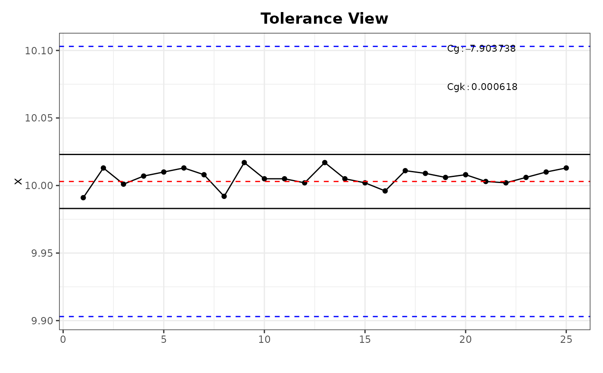

Function visualize the given values of measurement in a Tolerance View.
Usage
cg_ToleranceChart(
x,
target,
tolerance,
ref.interval,
facCg,
facCgk,
n = 0.2,
col,
pch,
xlim,
ylim,
main,
conf.level = 0.95,
cgOut = TRUE
)Arguments
- x
A vector containing the measured values.
- target
A numeric value giving the expected target value for the x-values.
- tolerance
Vector of length 2 giving the lower and upper specification limits.
- ref.interval
Numeric value giving the confidence interval on which the calculation is based. By default it is based on 6 sigma methodology. Regarding the normal distribution this relates to
pnorm(3) - pnorm(-3)which is exactly 99.73002 percent. If the calculation is based on another sigma valueref.intervalneeds to be adjusted. To give an example: If the sigma-level is given by 5.15 theref.intervalrelates topnorm(5.15/2)-pnorm(-5.15/2)which is exactly 0.989976 percent.- facCg
Numeric value as a factor for the calculation of the gage potential index. The default value for
facCgis0.2.- facCgk
Numeric value as a factor for the calculation of the gage capability index. The default value for
facCgkis0.1.- n
Numeric value between
0and1giving the percentage of the tolerance field (values between the upper and lower specification limits given bytolerance) where the values ofxshould be positioned. Limit lines will be drawn. Default value is0.2.- col
Character or numeric value specifying the color of the line and points in the tolerance view. Default is
`black`.- pch
Numeric or character specifying the plotting symbol. Default is
19(filled circle).- xlim
Numeric vector of length 2 specifying the limits for the x-axis. Default is
NULLwhich means the limits are set automatically.- ylim
Numeric vector of length 2 specifying the limits for the y-axis. Default is
NULLwhich means the limits are set automatically.- main
Character string specifying the title of the plot. Default is
`Tolerance View`.- conf.level
Confidence level for internal
t.testchecking the significance of the bias betweentargetand mean ofx. The default value is0.95.- cgOut
Logical value deciding whether the
CgandCgkvalues should be plotted in a legend. Default isTRUE.
Value
The function cg_ToleranceChart returns a list of numeric values. The first element contains the calculated centralized gage potential index Cg and the second contains the non-centralized gage capability index Cgk.
Details
The calculation of the potential and actual gage capability are based on the following formulae:
Cg = (facCg * tolerance[2]-tolerance[1])/ref.intervalCgk = (facCgk * abs(target-mean(x))/(ref.interval/2)
If the usage of the historical process variation is preferred the values for the tolerance tolerance must be adjusted manually. That means in case of the 6 sigma methodology for example, that tolerance = 6 * sigma[process].
Examples
x <- c(9.991, 10.013, 10.001, 10.007, 10.010, 10.013, 10.008,9.992,
10.017, 10.005, 10.005, 10.002, 10.017, 10.005, 10.002, 9.996,
10.011, 10.009, 10.006, 10.008, 10.003, 10.002, 10.006, 10.010, 10.013)
cg_ToleranceChart(x = x, target = 10.003, tolerance = c(9.903, 10.103))
#> Warning: No shared levels found between `names(values)` of the manual scale and the
#> data's colour values.
